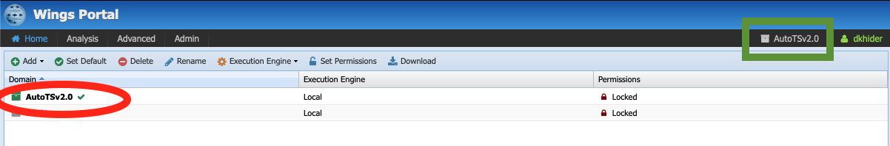

Working with PaleoTS¶
If you haven’t done so already, we recommend you read the The philosophy behind PaleoTS first.
WINGS login¶
PaleoTS is a specific domain of the autoTS/WINGS ecosystem. You can either Creating an account on our server or Installing paleoTS on your own system. If using our server, go to the WINGS portal. You will be presented with this login screen:

Click on login and enter you credentials on the next page. Once you are logged in, you should see the following:
Make sure that the PaleoTS domain is selected (green square around AutoTSv2 on the image above). If not, click on the name of the domain at the top (green circle) and select PaleoTS. You can make PaleoTS the default domain by selecting it in the menu (red circle on the figure above) and click on Set Default.
The rest of this tutorial will show you how to use PaleoTS. We advise completing this tutorial in order once as each step builds on understanding from the previous tutorial step. Please refer to the Terminology section as needed (the relevant terms will be linked in the text for ease of navigation).